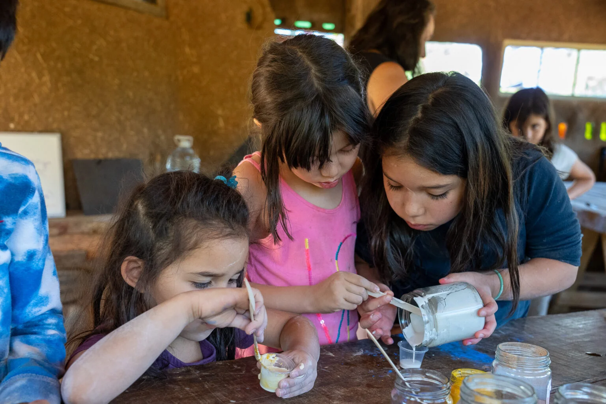

Imagen pendiente de recuperación
Primer Encuentro Regional de Puntos de Cultura Comunitaria de O’Higgins 2025
El hito vivido el día sábado 31, refrenda el compromiso de los PCC de OHiggins por fortalecer el trabajo en…
02/06/2025El hito vivido el día sábado 31, refrenda el compromiso de los PCC de OHiggins por fortalecer el trabajo en…
02/06/2025
El arte tiene el poder de transformar realidades, fomentar la autoestima, fortalecer la identidad y generar lazos comunitarios. Desde esta…
20/03/2025
Presentar a los nuevos Puntos de Cultura Comunitaria validados recientemente y continuar con los avances de los dos proyectos de…
07/01/2025
El pasado día sábado 31 de agosto, en dependencias de la Universidad de O’Higgins, se llevó a cabo la segunda…
02/09/2024El pasado martes 13 de agosto, en la Escuela José de San Martín de la comuna de San Fernando, la…
14/08/2024En el marco de la Semana de la Educación Artística (SEA), el grupo musical Kalfumalén da inicio a la ejecución…
14/06/2024«El Buen Vivir» es un proyecto de Mediación artística cultural con Ecoescuela Artística Itinerante Kalfumalén, en el cual compartimos con…
14/04/2022